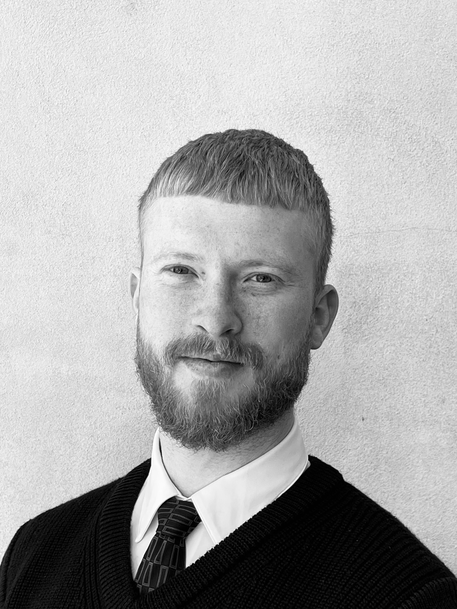

I bridge business needs and technical systems — designing automated workflows, scalable integrations, and data-driven platforms that reduce complexity and unlock performance.

I'm an analytical IT engineer with a BEng in IT & Economics from DTU and CBS. I work at the intersection of technology and business — turning complex workflows into smart, automated solutions.
My professional experience spans integration development at Novo Nordisk, ServiceNow platform engineering at PFA, and freelance technology consulting for startups. I've designed and delivered scalable integration architectures, ITSM automation, and data-driven dashboards across enterprise environments.
I thrive as a bridge between technical teams and stakeholders — taking solutions from initial concept through to stable, production-grade delivery. I learn new platforms quickly and bring a structured, agile mindset to every project.
Advising startups and organisations on technology strategy, platform architecture, and digital product development. Leading end-to-end engagements — from requirements discovery through to delivery-ready technical specifications and roadmaps.
Optimised ITSM processes and developed automated workflows in ServiceNow, increasing operational transparency and reducing manual coordination across departments. Built KPI dashboards enabling data-driven, real-time performance monitoring used at all levels of PFA's IT organisation — from operational teams to senior leadership.
Implemented system integrations via MuleSoft and REST APIs, automating data exchange across global platforms. Designed scalable integration solutions aligned to enterprise architecture and governance standards, supporting global ITSM operations across markets. Contributed to full agile sprint cycles including planning, backlog refinement, and technical documentation.
Delivered for PFA Pension — a full KPI dashboard implementation in ServiceNow enabling data-driven performance management across IT operations at all organisational levels.
Defined a complete technology strategy for a mobile storytelling platform targeting iOS and Android, enabling the founding team to move from concept to a scalable, investor-ready product.
Translated a startup's booking marketplace concept into a concrete, scalable platform architecture — enabling the client to engage developers and investors on a solid technical foundation.
Co-led a Copenhagen-based cultural platform focused on collaboration, inclusion, and cultural diversity — curating events combining music, visual art, and gastronomy over six years.
A dual-institution engineering degree combining technical computing with business strategy and economics. Covered full-stack development, distributed systems, software architecture, agile delivery, and strategic business analysis.
Completed in collaboration with PFA Pension. Designed and implemented KPI dashboards in ServiceNow, transforming complex ITSM data into clear, actionable insights for IT leadership and operational teams.
Open to new opportunities in integration engineering, platform development, and technical consulting.
Whether you're looking for a ServiceNow developer, an integration engineer with MuleSoft experience, or a technical consultant who can bridge business and engineering — I'd love to hear from you.